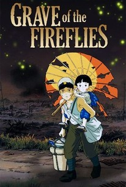

GRAVE OF THE FIREFLIES
Description:
Release Date: April 16, 1988
Director: Hayao Miyazaki
Screenplay: Hayao Miyazaki
The movie opens with Seita's ghost looking back on the events of his life. The story then shifts to the summer of 1945, when Japan is losing the war. Seita, a teenage boy, and his younger sister, Setsuko, are left to fend for themselves after their mother is killed in a bombing raid. They go to live with their aunt, who resents them for being a burden and treats them cruelly. Seita decides to take Setsuko and leave, hoping to find a way to survive on their own.
The siblings find an abandoned shelter in the countryside and make it their home. Seita tries to provide for them by scavenging food and other supplies, but it's a constant struggle. The war continues to take its toll on the siblings, as they witness the devastation and death around them. Despite their dire circumstances, Seita tries to maintain a sense of normalcy for Setsuko, creating imaginary games and telling her stories to distract her from the horrors of their reality.
As the war worsens, food and resources become increasingly scarce, and the siblings begin to suffer from malnutrition and illness. Setsuko becomes increasingly weak and eventually dies from malnutrition. Seita is devastated by her death, and the film ends with Seita's ghost reuniting with Setsuko's spirit and watching over their hometown from above.
"Grave of the Fireflies" is a powerful and moving film that shows the devastating effects of war on innocent civilians. It highlights the tragedy of children caught up in the conflict and forced to endure unspeakable suffering. The film also portrays the human toll of war, showing the ways in which ordinary people are affected by the decisions of those in power.
The movie's use of animation is particularly effective in conveying the emotional weight of the story. The animation style is realistic, and the characters are beautifully rendered, which makes the film's depiction of the horrors of war all the more impactful. The film's haunting score also adds to its emotional power, underscoring the tragedy and loss at the heart of the story.